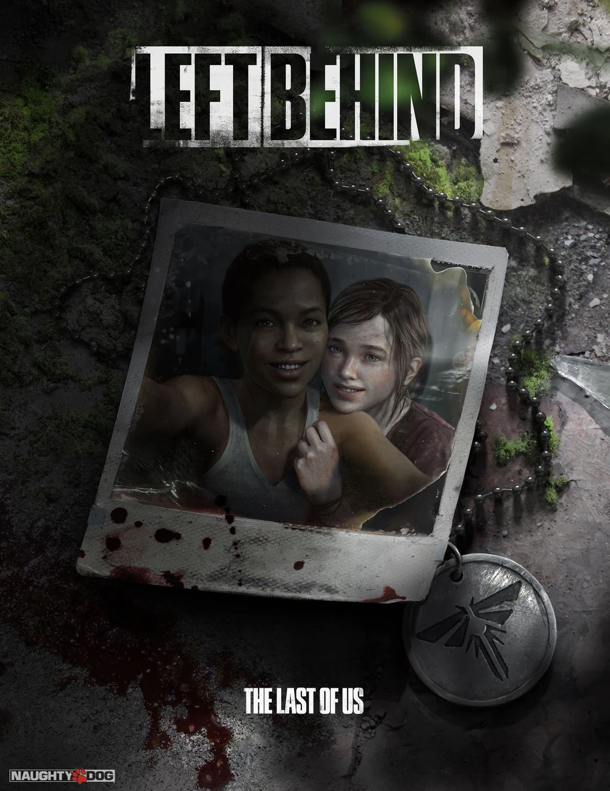

- Об игре
- Геймплей
- Коллекционный материал
- Глава 1: Скоро вернусь
- Глава 2: Приключения в торговом центре
- Глава 3: Так близко
- Глава 4: Шутки и проказы
- Глава 5: Враг моего врага
- Необязательные разговоры
- Глава 1: Скоро вернусь
- Глава 2: Приключения в торговом центре
- Глава 3: Так близко
- Глава 4: Шутки и проказы
- Глава 5: Враг моего врага
- Оценки
The Last of Us: Left Behind
Одни из нас: Оставшиеся позади

Naughty Dog
Издатель
Sony Computer Entertainment
Локализатор
1С-СофтКлаб
Язык интерфейса
Основные языки мира, включая русский
Дата Выпуска
14 февраля 2014 г.
The Last of Us: Left Behind (рус. Одни из нас: Оставшиеся позади) — сюжетное
дополнение для игры The Last of Us Part I, которое вышло 14 февраля 2014 года. Сюжет дополнения
рассказывает о прошлом Элли и её подруге Райли, параллельно затрагивая события, которые
происходили во время сюжета одиночной кампании.
Это история об Элли её подруге Райли и событиях, произошедших с девочками за три недели до сюжета игры The Last of Us Part I, а также параллельный рассказ о том, через что прошла Элли, чтобы спасти умирающего Джоэла.
В отличии от The Last of Us Part I, Left Behind больше ориентирован на стелс и повествование. Однако появилась новая возможность — натравливать на живых противников заражённых, что позволяет прокрасться незамеченным, либо с лёгкостью добить оставшихся противников. В Naughty Dog заявили, что они хотели включить эту функцию в оригинальную игру, например, в главе «Питтсбург», но на это не оставалось времени.
Как и в оригинальной игры, в сюжетном дополнении имеются предметы для коллекционирования, однако в данном дополнении присутствуют только артефакты. Всего в игре их четырнадцать штук, три из них уже будут находиться у Элли в рюкзаке.
Дополнение получило положительные отзывы от критиков: 89.84% на GameRankings и 88/100 на Metacritics.
содержание
Об игре
Это история об Элли её подруге Райли и событиях, произошедших с девочками за три недели до сюжета игры The Last of Us Part I, а также параллельный рассказ о том, через что прошла Элли, чтобы спасти умирающего Джоэла.
Геймплей
В отличии от The Last of Us Part I, Left Behind больше ориентирован на стелс и повествование. Однако появилась новая возможность — натравливать на живых противников заражённых, что позволяет прокрасться незамеченным, либо с лёгкостью добить оставшихся противников. В Naughty Dog заявили, что они хотели включить эту функцию в оригинальную игру, например, в главе «Питтсбург», но на это не оставалось времени.
Коллекционный материал
Как и в оригинальной игры, в сюжетном дополнении имеются предметы для коллекционирования, однако в данном дополнении присутствуют только артефакты. Всего в игре их четырнадцать штук, три из них уже будут находиться у Элли в рюкзаке.
Глава 1: Скоро вернусь
- Записка с кодом — находится в аптеке Уэстона за прилавком (сюжетный, невозможно пропустить).
- Записка фармацевта — отперев замок в магазин «Американская принцесса», в дальнем левом углу помещения можно будет найти приросшего к полу и стене щелкуна. При обыске Элли найдёт ключ от фармацевтического отдела, и в этот момент с заражённого выпадет данный артефакт.
- Записка из салона — пробираясь через развалины салона красоты, выбравшись через расщелину мимо прилавка с лаками для ногтей, у окна, через которое Элли выберется в атриум, будет находиться труп медика военных. Записка будет расположена у его ног.
Глава 2: Приключения в торговом центре
- Плакат о розыске - перебравшись через деревянные планки, рядом с надписью "Fight with Fedra", в противоположной стороне комнаты будет стоять стол, на котором и будет находится данный артефакт.
- Записка с предупреждением - спустившись до цокольного этажа торгового центра (после битвы на кирпичах с разбиванием стёкол в автомобилях), необходимо повернуть в первое же помещение по левую сторону от Элли, где на левом столе с коричневым чемоданом и будет лежать данный артефакт.
Глава 3: Так близко
- Записка из атриума - спрыгнув на площадку, над которой будет висеть военный вертолёт, необходимо добраться до дальнего правого угла карты и найти медицинскую каталку-койку с отрубленной рукой, артефакт будет лежать на полу в луже крови.
- Записка с генератора - добравшись до затопленного служебного помещения торгового центра, на платформе будет стоять генератор, а рядом с ним металлическая бочка, на которой и будет лежать артефакт.
- Диктофон из атриума - запустив генератор и добравшись до калитки, дальнейший путь поведёт вверх по эскалатору. Поднявшись, необходимо повернуть влево и проделать путь до палатки, внутри которой у окровавленной постели и будет лежать артефакт.
Глава 4: Шутки и проказы
- Записка с кухни - в начале главы необходимо забежать за карусель и перепрыгнуть за стойку общепита «Fast Burger» (рус. Быстрый Бургер), на кухне с левой стороны на столике будет лежать данный артефакт.
Глава 5: Враг моего врага
- Фотография отряда - спрыгнув с вертолёта, где Элли обнаружит аптечку, добравшись до ближайшей аллеи, с правой стороны будет дверной проем, в помещении которого будет находиться труп военного (Риган Фрэнсис), рядом с ним будет лежать артефакт.
- Диктофон из шахты - возле магазина «Octopus Records», где Элли может расправиться с каннибалами, будет коридор, ведущий к уборным. Добравшись до конца по коридору можно заметить следы крови, ведущие в вентиляцию. Необходимо проследовать по ним до очередного трупа военного (Эллис) у которого и будет данный артефакт.
Необязательные разговоры
Глава 1: Скоро вернусь
- Разговоры отсутствуют
Глава 2: Приключения в торговом центре
- Пройдя боком по узкому краю и перепрыгнув через отверстие в стене в комнату с камином, необходимо следовать за Райли до надписи на стене, оставленной Цикадами.
- Добравшись до торгового центра и спустившись по эскалатору, необходимо повернуть направо и следовать по коридору до постера с рекламой, посвящённой Гавайям.
- Вернувшись к эскалатору, необходимо найти постер с рекламой водяных пистолетов, который будет находиться около большой кадки для растений.
- Спустившись по очередному эскалатору, возле палатки Уинстона можно поговорить с Райли.
- В палатке, разговор можно активировать у столика с газетами.
- Напротив палатки, на скамье, будет лежать седло Принцессы, разговор можно активировать возле него.
- Надев маску волка в магазине «Spooky Town Shop», необходимо добраться до дальнего правого угла помещения и у банки с искусственными глазами активировать диалог.
- Проследовав за Райли до противоположного угла, активировать диалог можно после того, как она наденет маску Дракулы.
- Для данного разговора необходимо вернуться на центральный ярус и надеть зелёную маску ведьмы, а потом поговорить с Райли.
- На ближайшем к выходу ярусе, необходимо надеть маску птицы с надписью «Triple Phoenix».
- Данный разговор необходимо активировать на черепе-предсказателе «Skeleseer», и продолжать активацию до самого конца, всего 8.
Глава 3: Так близко
- Разговоры отсутствуют
Глава 4: Шутки и проказы
- Необходимо добраться до карусели и активировать диалог у лошади.
- После поездки на карусели, Райли даст Элли новую книжку с анекдотами «Шутки в сторону: второй выпуск», после чего у игрока появится возможность вычитывать шутки из книжки. Всего их чуть больше 20 штук, но необходимо оставаться вблизи от места, где Элли получила книгу, иначе разговор сбросится.
- Спустившись по ступенькам, необходимо активировать диалог у фотобудки.
Глава 5: Враг моего врага
- Разговоры отсутствуют.
Оценки
Дополнение получило положительные отзывы от критиков: 89.84% на GameRankings и 88/100 на Metacritics.